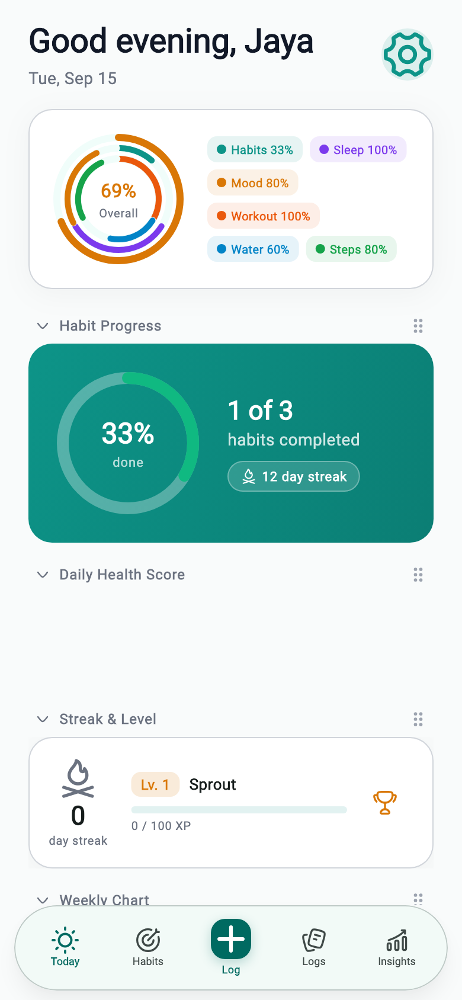
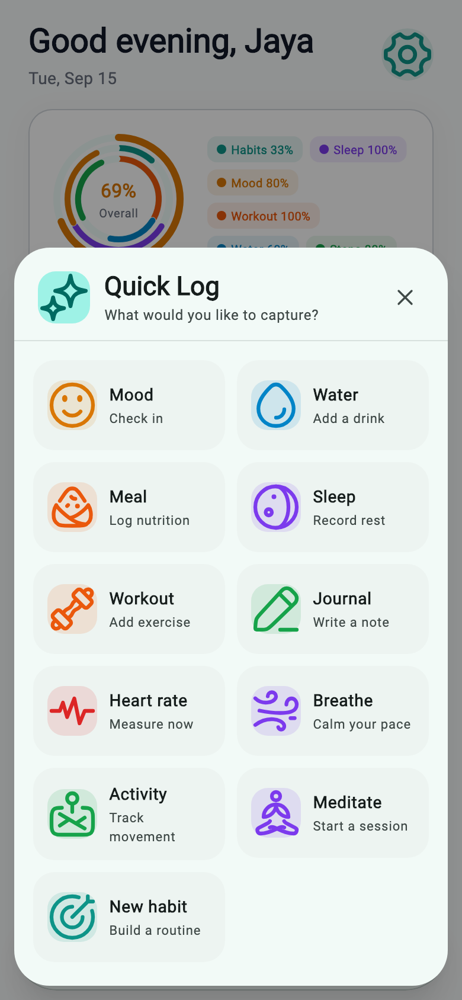
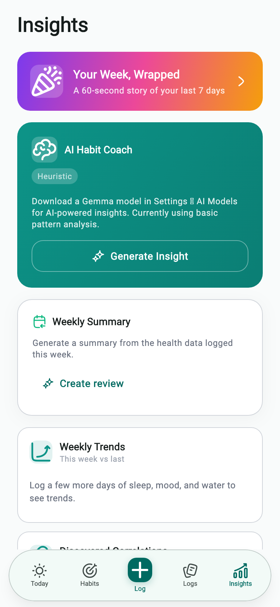

01 · Mobile health system
Vitalis
A comprehensive, offline-first health companion that makes a large feature set feel coherent: habits, vitals, nutrition, sleep, workouts, mindfulness, journaling, goals, and private insights.
- One consistent design system across every health domain
- Robust persistence, recovery, validation, and empty states
- Responsive Flutter UI with real rendered previews